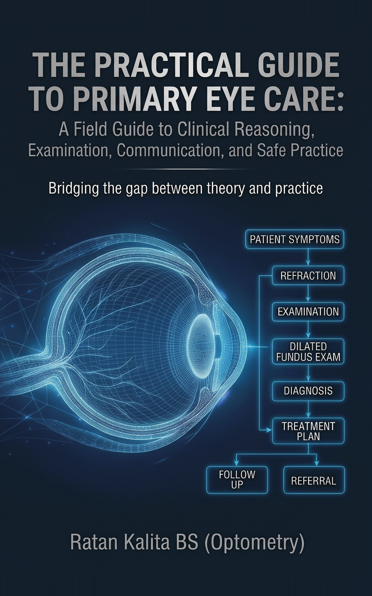

B.Optom Students & Interns
Bridge the transition from classroom theory and exam notes to confident, structured outpatient postings and clinical rotations.
A Field Guide to Clinical Reasoning, Examination, Communication, and Safe Practice
Ratan Kalita
20+ Years in Clinical Practice & Mentorship

A Field Guide to Clinical Reasoning, Examination, Communication, and Safe Practice
By Ratan Kalita • 20+ years across private practice, community eye care & hospital outpatient clinics
Textbooks teach what conditions look like; real-world outpatient clinics test how you think, triage, refract, examine, communicate, and keep patients safe under time pressure. This field guide bridges classroom theory and chairside clinical judgment.
Application submitted to RRRNA (Ref: 62494|ISBN|2026|A). Print layout and bulk institutional distribution for Indian colleges, eye hospitals, and optical chains will follow ISBN assignment.
Target Audience
Written for clinicians and trainees building reliable outpatient habits from day one at the chair.
Bridge the transition from classroom theory and exam notes to confident, structured outpatient postings and clinical rotations.
Strengthen independent clinical reasoning, avoid subtle diagnostic traps, and manage high-volume clinic days with composure.
Build clear pre-examination habits, accurate workups, and dependable support workflows across hospital and optical teams.
Reinforce foundational refraction, primary triage, and co-management clarity alongside optometry and nursing colleagues.
Chairside Workflows
Practical clinical reasoning structured around real outpatient encounters rather than abstract memorization.
Separate routine outpatient complaints from urgent ocular threats early, recognize red flags quickly, and structure safe referral decisions.
Spot accommodative pitfalls, over-minusing, axis/cylinder hesitations, and patient responses that mislead routine refraction endpoints.
Move beyond aimless looking with a repeatable, structured anterior-segment examination sequence that catches subtle clinical clues.
Avoid false reassurance from single pressure readings, weigh risk factors thoughtfully, and build reliable fundus and screening habits.
Adapt examination techniques for children and protect corneal health with disciplined contact lens fitting, follow-up, and wear hygiene.
Explain findings clearly to anxious patients and families, and maintain clean, accurate clinical notes that support continuity of care.
A companion nonfiction book in progress examining why informal rescue habits and unclear ownership slow down growing 5–200 person businesses—and how owners can build clear accountability and repeatable processes.
Colleges • Eye Hospitals • Optical Chains
Planning intern induction kits, department reference copies, or multi-branch staff training for your optometry school, eye hospital, or optical chain? Reach out directly to coordinate bulk paperback availability once ISBN allotment (62494|ISBN|2026|A) completes.
Direct Author Contact